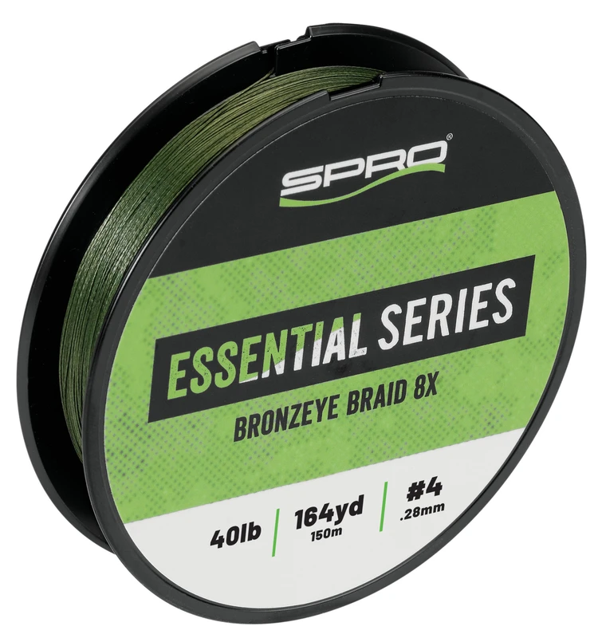

SPRO Essential Bronzeye 8X
Diameter chart, reel capacity & backing guide

Essential Bronzeye 8X is the product SPRO names Bronzeye Braid 8X and identifies as Essential Series. It is positioned for frogging and flipping, with 40, 50, 60 and 80 lb Moss Green options in 150 m / 164 yd packages.
- Construction
- Japanese eight-strand braid in SPRO's Essential Series; Moss Green
- Listed strengths
- 40-80 lb
- Line type
- Braid main line
Is Essential Bronzeye 8X right for your setup?
Bronzeye is a candidate for a suitable heavy-cover casting setup, not a general finesse braid. Pick the frog or flipping presentation, rod power and reel first. Its 40-80 lb range calls for deliberate drag and hook-setting judgment; the printed strength does not establish the safe load for the rod or reel.
How much Essential Bronzeye 8X will fit?
Calculated estimates, not measured fills. Stop at the reel manufacturer's fill level even if some line remains.
SPRO Essential Bronzeye 8X diameter chart
Only the source-reviewed strengths and package combinations listed below are included. Converted measurements are identified in the source notes.
| Strength | Inches | mm | Spools (m / yd) |
|---|---|---|---|
| 0.011024 | 0.280 | 150 m (about 164 yd) | |
| 0.012402 | 0.315 | 150 m (about 164 yd) | |
| 0.01378 | 0.350 | 150 m (about 164 yd) | |
| 0.016535 | 0.420 | 150 m (about 164 yd) |
Choosing your Essential Bronzeye 8X strength
The 40 and 50 lb package labels show 0.28 and 0.315 mm. Even within the same Bronzeye family, moving up changes how much fits the spool.
The 60 and 80 lb labels show 0.35 and 0.42 mm. Check capacity and rod rating before selecting the heavier size for vegetation or cover.
SPRO does not list a 65 lb Bronzeye option in these variants. Do not relabel 60 lb as 65 lb to match another brand's range.
Specification-based guidance, not a ReelCalc hands-on performance test. Capacity results are estimates, not measured fills.
Want a guided recommendation?
Continue in the Setup WizardSame pound test, different diameters
At your selected strength
Loading diameter comparisons...
What changes with another line?
Nearby diameters in the line database
| Line | Strength | Inches | Difference |
|---|---|---|---|
| Loading line database... | |||
Backing, working line & leaders
Make a casting-length plan
Start with casts, a reserve for fighting fish and enough line for retying. A 164-yard filler may leave surplus on a compact casting reel; do not overfill to use it all.
Keep a firm braid bed
Follow the reel's braid attachment instructions and wind under even tension. After a heavy load, check that line has not buried into a loosely wound lower layer.
Consider the connection for the cover
Straight braid and braid with a leader are different rigging choices. Choose for the lure and contact surfaces; neither choice changes the physical Bronzeye diameter used for capacity.
How Much Fits on These Reels?
Estimated full-spool capacity for the Essential Bronzeye 8X strength selected above, with no backing. These are calculated examples, not physical tests or recommendations for every pairing.
Loading capacity estimates...
Essential Bronzeye 8X questions, answered
Is Essential Bronzeye the same identity as Bronzeye Braid 8X?
Yes. The official Bronzeye product page and package expressly identify the Essential Series, the eight-strand construction and the same strength range.
Is it available in 65 lb?
The reviewed official variants are 40, 50, 60 and 80 lb. No 65 lb variant is included.
How long is the retail spool?
SPRO lists 150 m and prints 164 yd on the package. Those are rounded labels for the same package, not two different spool offerings.
How much Essential Bronzeye 8X will fit my reel?
Use the exact strength and the reel's published capacity. Pound test is not a fixed diameter, so equal-strength products can produce different fill estimates.
Is one 164-yard package enough?
Only when it covers the planned working length and an appropriate reserve. Backing can fill unused volume, but cannot supply more working line for long casts, deep drops or fish runs.
Specifications & sources
Official sources retrieved September 13, 2026. Millimeter diameters are published; inches are converted by dividing by 25.4. All four official Moss Green package labels visually reviewed; printed millimeter diameters used without PE-size inference. 150 m / 164 yd is a published package pair. Package options are not a stock or price guarantee.
Calculations use the catalog's listed inch diameters. Published inch and millimeter values may differ slightly because of rounding.
- Official SPRO specification source Exact numeric rows, package identity and model positioning.